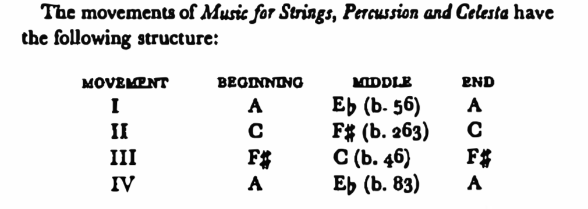

截至第VII章，我们已经基本掌握了流行、爵士和古典理论的概貌。从这里开始，就进入通关后的“进阶深造要素”了。
这一次，我们将介绍一个稍微超出我们迄今为止讨论的调性音乐框架的想法——“Axis System”。Axis 是意为“轴”的英文单词。在中文里通常翻译为“中心轴系统”（或中心轴理论）。中心轴系统是音乐学者埃尔诺·伦德瓦伊（Ernő Lendvai）提出的一种独特理论，他假定“巴托克曾使用该系统进行作曲”。
简单介绍一下中心轴系统的概要：它扩展了 T D S 的功能理论，试图将功能优美地分配给全部 12 个音。
 1. 五度圈与 T D S
1. 五度圈与 T D S
首先，我们熟悉的如下……

现在假设调性是 C 大调，那么能被称为主和弦（Tonic）的和弦有哪些呢？ ……那当然是 C 和 A 了。

Em 基本上属于属和弦（Dominant），所以这里先将它排除。难道就只有这两个吗？虽然我们以前没有深究过，但对于调外和弦，如果硬要说的话，它们能被分类到 T D S 中的哪一个呢？让我们来思考一下。
主和弦轴
例如，E♭ 怎么样？这个和弦是从 Cm 调借来的，也就是所谓的“同主音小调”（Parallel Minor）和弦群。在 Cm 调中，这个和弦属于主和弦（Tonic）。C 调和 Cm 调具有相同的主音（Tonal Center），是关系非常密切的调。那么，即使在 C 调中，把 E♭ 当作主功能和弦，应该也没有什么异议吧！
如果是反向模式……在同主音大调中又会怎样呢？ 在 A 大调 中，作为另一个主和弦，存在着 F♯m。如果不把它也算作主功能和弦，那就不公平了吧。

这样一看，就会注意到一个有趣的现象。在五度圈上观察时，这四名主和弦成员，优美地排列成了一个十字形。这是偶然吗？还是象征着音乐理论的数学之美？无论如何，过去也曾有人认为这个发现极其引人入胜。
五度圈与优美的 T D S 配置。Axis System 的故事，就从这里开始。
属和弦轴
同样地，让我们来思考属和弦（Dominant）的轴。G 和 E 自不必说，由 G 进行三代理倒置而成的 D♭，也应该履行属功能的作用。 然后果然，在 Cm 调中担任属和弦的 B♭ 也可以被称为属功能和弦。退一步说，作为 E7 的三全音代理甚至还有 B♭7，因此它在双重意义上都是属功能。

于是，令人惊讶的事情发生了！属和弦群果然也排列成了十字形。我们是在见证奇迹吗……？
下属和弦轴
最后是下属和弦（Subdominant）。大家可能已经猜到了，被归为下属和弦的和弦群同样排成了十字形。

A♭ 倒还好说，但说 B 是下属功能，你能接受吗？
请回想一下在第Ⅶ章中讲过的古典派小调。Bm(-5) 是走向 E 的下属功能角色，变成重属和弦（Double Dominant）的 B7 同样也是连接到 E 的下属角色。而且，在“同主音大调”那一节中登场的 Bm7，其进行方向也是走向 E 最为自然。
从这个角度来看，将其归为下属和弦实际上可以说是非常贴切的。
由此可见，五度圈内的 T D S 分布确实非常优美。正是这一发现，构成了中心轴系统的起跑线！

2. 中心轴系统的诞生
中心轴系统最初是埃尔诺·伦德瓦伊为了妥善分析古典作曲家巴托克（Béla Bartók）的音乐而提出的理论。它的本质原本就是用于分析的理论。 打开音乐示例 ↗
巴托克就是这种相当先锋的前卫作曲家。即使是如此混乱复杂的乐曲，也必定是在巴托克内心的某种秩序之下完成创作的。于是，分析家伦德瓦伊提出的假说之一，就是中心轴系统。
伦德瓦伊在研究巴托克的乐曲后发现，例如在由4个乐章组成的《为弦乐、打击乐与钢片琴所写的音乐》中，全部4个乐章在中途都进行了从中调来看位于三全音位置的调的转调这一事实。
转调到三全音调，在古典音乐世界中是相当罕见的。而这居然连续在4个乐章中发生，必定是有意识地进行的。这就是事情的原委。
按常规感觉来看，C 和 F# 是相距甚远的存在。但伦德瓦伊主张，巴托克似乎正是借助这种“中心轴”的思想，在 C 和 F# 之间找到了功能上的同一性……
3. 中心轴系统概要
那么，就让我们重新看看，故事从“轴的发现”之后是怎么推进的。首先，发现的东西总得先起个名字。这就是音乐理论的宿命。 伦德瓦伊把 C–F♯ 这条轴命名为一次轴（Principal Branch），把与它相对的 A–E♭ 轴命名为二次轴（Secondary Branch）。并且，他把枝的一方称为极（Pole），把相反的一侧称为对极（Counterpole）。

顺便一提，按常理想，这些名称是以 C 为基准时取的。如果是从 A 调开始，那么把 A 那一侧作为 Primary Branch 才顺理成章吧。而书中提出了以下两点。
- ① 在这个十字形中归为同一组的音，以它们为根音构成的和弦，全都属于同一功能。（例：C、E♭、A、F♯ 全都是 T 功能）1
- ② 极音可以随时与它的对极音互换，而完全不改变其功能。2
这两点可以说就是“中心轴系统”的概要。真是一份相当大胆的声明。不过，②中的“音”究竟指单音、指和弦，还是指调？又或者“功能”一词指的是哪个层面的东西？关于这些，本书的说法都很含糊。
巴托克式伪终止
例如书中作为活用方法介绍的，就是巴托克式伪终止（Bartokean Pseudo Cadence）。说白了，它就像是三全音代理的亲戚。

具体说明一下：G7 的三全音是 B 与 F。当然，B 是导音、F 是下属音，从这里应当向 C 与 E 张开解决；但这里不这么做，而是把认识整个翻过来——让 F 当导音、B 当下属音。
按这种视角去解决，三全音就不是张开，而是闭合，最终到达 F♯。确实，三全音的浑浊感这样就解决了！从音响上也有种误入奇妙森林的感觉，挺有意思的。这个点子，其实相当不容小觑。
下面这个，是把“巴托克式伪终止”的思路稍加应用、丰满一下的例子。你能看出三全音的解决被翻转的那个瞬间吗？明明进行到了一个与预想明显不同的和弦，三全音却扎扎实实地解决了，让人有种被狐狸迷住的感觉。
三全音代理的始祖？
对生活在现代的我们来说，属七和弦在五度圈的另一侧被替换，就是熟悉的“三全音代理”，所以也没什么大不了。但从年代上看，甚至有巴托克影响了现代爵士乐这样的说法，那是那样一种历史感觉——一想到他在古典音乐的世界里就已经在用这种技法，你不觉得厉害吗？
而且不光是这里，在前面提到的调性设定等各种场合都能看到这类技法，所以伦德瓦伊提出假说：巴托克是把这套东西当作一个“系统”在充分利用的。
之后的路……
那么这套系统要怎么用？关于活用方法，伦德瓦伊完全没有明说。因为他主张的是“这大概是巴托克用过的系统”。他倾注热情之处，是探究巴托克那些不可思议的用音背后的东西，因此内容以巴托克以及其他几位作曲家的作品分析为中心。当然，书里也不可能写着“用中心轴系统能搭出这样的和弦进行哦！”这种指南。
实际上在这本书里，谈到中心轴系统的只有区区 16 页（+附录）。之后就直接转向斐波那契数列与黄金分割的话题了。
关于任意性与逻辑跳跃
在进入实践之前先提醒一句：中心轴系统绝不是能广泛适用于各种音乐的全球性理论。它与既有理论的兼容性只有一部分。这也理所当然，因为它是“伦德瓦伊认为巴托克为了刻意制造出传统古典所没有的音响，或许是这样想的系统”。
中心轴系统并不完整，其逻辑展开中有大量任意武断的部分。
例如，伦德瓦伊举出巴托克作品中“从 F♯ 开始、进行到 C、最后又回到 F♯ 结束”“以 B 开始的旋律在 F 上结束”之类的结构为例，主张这些是基于“等功能性”的……


然而——稍微想想谁都会发现——这些例子丝毫没有暗示“功能是等价的”。巴托克也可能只是把 F♯ 当作“离 C 最远的音响”而选用的。
当然，他也给出了一些更像数学的依据，用上了前面说的“五度圈”或“泛音”，但在那里展开的逻辑统统都相当不完整。 比如刚才那个：就算承认 C 与 Am、Am 与 F♯m 是关系调（Relative）关系，就此直接断定 C 与 F♯ 也等功能，也是逻辑跳跃；更何况它是否“可以替换”，又是另一个问题。
后辈的吐槽
比伦德瓦伊小 8 岁、同样研究巴托克，据说还与伦德瓦伊当面交换过意见的匈牙利音乐学者亚诺什·卡尔帕蒂（János Kárpáti），也在论文里指出过这种“任意性”和“逻辑的粗糙”。
Would it not be a better interpretation to say that the progression starts from a distant tonality and arrives at the central, actual tonality of the work?
For Bartok polar tonalities by no means represented the same function, but were rather a distant relation substituting a traditional tonal connection.
与其这样说，不如说进行先从遥远的调性出发，最终到达中央、也就是乐曲真正的调性——这样解释岂不更好？
对巴托克而言，所谓“极”的调性丝毫不是在表示功能的同一性，而不过是拿远关系调来替代传统的调性关系罢了。
János Kárpáti – Axis Tonality and Golden Section Theory Reconsidered
在这篇论文里，卡尔帕蒂还指出了许多其他逻辑问题，顺便把传统的 TDS 理论也狠狠吐槽了一通。果然，只要在同一根轴上就什么都能代理——这种美梦般的剧情，怎么可能存在嘛……😭
4. 运用中心轴系统
不过，管它逻辑靠不靠谱，“把五度圈的另一侧也包括进来、对音乐做平等的三分”这个想法，总之就是能带来新鲜的构思吧！至少那份兴奋感是实实在在的。接下来终于要把这套系统应用到实践里了。
自由构建进行
举例来说，当以 IV–V–I 这样的进行为基础时，按照中心轴系统的思路，代理和弦的选项就会变得非常好懂。

就是这么回事。也就是这样想：每个功能都能从 4 个根音里挑一个，而且放在上面的性质也能自由选择。当然，作为基础的不一定非得是 S–D–T 的顺序。
代理候选项里的大部分，用此前的理论已经能解释了，所以本身并不新鲜。关键在于，这样把和弦选项“平等地”并列出来，尤其能成为想写不定调性乐曲时的指标。在构建第 VI 章讲过的“多重主音系统”乐曲时，拥有这种视角也会很有利。
比如想从 I 开始、接着用主和弦往下走的时候，就可以这样思考。

想浮起来就走 ♭III，想沉下去就走 VI，想翻到对面的世界就走 ♯IV——能归结成如此简单的思路。所以，才能轻巧地从那些不知不觉就会陷进去的和弦理论框架里脱身。
主题性的确保
那么，要把中心轴系统好好地用到作曲里，需要的技术是什么呢？首先重要的是确保主题性。 中心轴系统里和弦性质自由、进行自由、调性暧昧，什么指标都没有，所以只是顺着系统随手挑和弦的话，那和乱来没有任何区别。
所以，先决定 TDS 怎么走，再决定 4 处根音怎么选，然后决定和弦性质怎么选。自己为这些环节搭起某种倾向与意图，再在此基础上作曲，这样才好。
在系统之上，搭起一个框架。只有到这一步，曲想才会生出主题性、生出个性，才能发挥出原创性。

这是基于中心轴系统试着写的一个例子。它把上谱那样的和弦进行重复两次，在第三遍途中结束。相当于把 S–D–T–T 这一经典流程发展开来。
为了让曲想具有统一感，这次设定了下面这样的主题。
- 除最后的属七和弦以外，全部统一为小三和弦
- 前半 4 小节与后半 4 小节的根音走向相同（下行半音 → 下行大三度 → 下行小三度）
- 第 4 小节→第 5 小节的过渡处放一个容易听出的强进行
- 第 1–4 小节把 Pad 的最高音固定为 E 音，第 6–8 小节固定为 C♯ 音，以淡化转调感
- 和弦绕完一圈回到开头时，也设计成漂亮的半音下行
这次通过“半音下行”“三度下行”“完全四度上行”这些经典的进行感来制造稳定感。因此，单看根音的运动，与平常的音乐亲和性很高；但一关注和弦性质，就清一色是小三和弦。这一点就是这次亮出的个性。 在确保作为调性音乐的好听感的同时，让进行本身稍微脱离自然音阶系统一点——大概是瞄准了这种状态。
根音和和弦性质的选择方式不同，调性以及“平常的 TDS 感”就会越来越模糊。像这样全部统一成小七和弦，哪个是 T、哪个是 D 都已经不确定了。能给你一套轻松入门这种“不可思议的世界”的方法，正是中心轴系统的优点。
在 AXIS 这个基盘之上做什么是自由的，可以在那里发挥个性。至于要让它多像调性音乐、或者多不像，还有很多可以实施的技术。既有趣，也值得一做。
既有知识的活用
要活用中心轴系统，此前学过的知识会大有帮助。 比如刚才样本中保持最高音的技术，作为整理调性感的办法很有效；不用说，它追根溯源就是爵士理论的声部进行（Voice Leading），以及古典派和声的“最短路径原则”。另外，“根音变化、性质变化会改变音响的质地与能量，通过控制它来自由操纵曲想”这个思路，就接近连接系（Nexus）理论。
巴托克的作品也是正因把和声技术运用得滴水不漏，才成为富有魅力的作品。若只凭表面理解去拼贴和弦，或轻率地拿它来做重配和声，恐怕都无法发挥中心轴系统的真正价值。
中心轴系统了不起的地方在于：要做出上面样本那种有创意的和弦进行时，完全不需要“借用”“替换”之类的复杂思考。它明明是一套数学式的系统，用起来的手感却非常感性。
5. 准确解读中心轴系统
于是，“系统本身并不完整，所以把它当作组合既有知识时的一个零件来用”在实际操作上没有问题；接下来是给那些想把中心轴系统准确弄清楚的人准备的补充。
《Bela Bartok – An Analysis of His Music》的内容，如前所述既有逻辑跳跃之处，也有一些只大致一读就容易误解、不太好懂的地方。而且系统本身简单，也非常容易被扩大解释。
作为使用理论的一方，总希望能把伦德瓦伊本人的解释与后世人擅自附加的解释区分开来吧。所以，我们就来好好确认一下：关于中心轴系统，伦德瓦伊究竟解释到了哪里、是怎么解释的。
关于和弦性质
在原书中，关于和弦性质并没有特别明确的规则。只是说明在十字形的轴上归为同一组的音，以它们为根音构成的和弦，全都属于同一功能。
不过在正文中，大三和弦、小三和弦、小七和弦、属七和弦、半减和弦都有谱例，可以确认它们全都是按根音来分配功能的。那么照字面接受原文的话，还是自然可以认为伦德瓦伊的主张是“不管和弦性质如何，功能都由根音决定”。
伦德瓦伊也论述过单音层面的功能，但像“把不同功能的音混合起来，就能做出带有‘中间’功能的和弦”，或者“减七和弦是由 4 个同功能的音构成的和弦，所以拥有最纯粹的功能”这类话，书里并没有写1。
关于转位形态
另外，在中心轴系统里，当和弦取转位形态时，功能不是由“低音”而是由“根音”决定的。也就是说，如果是 C/E，功能要按 C 来判断。
在古典理论中说到“Fundamental”，当然指的就是根音；更重要的是，伦德瓦伊在分析时就是这么做的。就书中而言，“为弦乐、打击乐与钢片琴所写的音乐”第 4 乐章的分析部分应该最容易看懂。
F♯7/A♯ B7 E7/G♯ A7 G♯7/F♯ C♯7/E♯ C7/E F7/E♭
这是充分利用转位形态构成的优美合奏，但伦德瓦伊把它简单记作“Fis7”之类，全都以分子为基准做功能分析。也就是说，他看 A7 之后的 G♯7 C♯7 这个“分子”部分，分析说这是 D7 G7 的翻版。
虽说身属近代，巴托克终究是古典作曲家，所以分析的做法也这样遵循了古典的礼法。
转位以外的斜线和弦……？
这样一来，自然就会冒出这个问题：转位以外的斜线和弦，比如 Dm7/G 这种微妙的和弦，到底该按哪一边判断啊！然而这里果然还是“无可奉告”。伦德瓦伊的立场是与巴托克分析无关的部分就不碰，可见他绝不是想构建一套包罗万象的体系。
关于根音省略形态
还有一点需要注意，就是“根音省略形态”的解释。在古典理论界，B–D–F 这个和弦首先被视作“抽掉了 V7 根音的东西”，一般认为“虽然没响出来，但根音在 G，而且是属功能的一种”。

是否承认这个“作为音并没有响出来，但由上下文补出的虚拟根音”的概念，是个问题。因为中心轴系统的基准不是“低音”而是“根音”。这个和弦的根音是“概念上的 G”吗？还是“实际存在的 B”那边？
对此，伦德瓦伊在第 9 页说了下面这些。
伦德瓦伊氏
把“B–D–F”这个和弦当作 D 功能的传统解释是有问题的。如果不看 B–D–F，而是换成 B–D♯–F♯ 这种具有明确独立作用的和弦来考虑，这份含糊就会立刻消失，从而明白 B 是 S 功能。
乍看之下，读起来像是伦德瓦伊在说“B–D–F”这个和弦是 S 功能。也只能这么读吧。但其实不是。从这个回答里，根本搞不清伦德瓦伊对“B–D–F”这个和弦的看法。
巧妙的诡辩
你能察觉到这个回答不对劲吗？我们关心的明明只是“B–D–F”这个减三和弦，他却擅自把话题偷换成了“根音已确定为 B 的另一个和弦”。这一点实在太过巧妙，平常读的话，恐怕连自己被绕进去了都察觉不到。
This ambiguity is resolved as soon as either a major or minor chord is build on B instead of a diminished triad, i.e. the B is granted an independent Role. In this case B will have the function of the subdominant.
Erno Lendvai – Bela Bartok – An Analysis of His Music (p.9)
“只要被赋予（Grant）了独立作用（Independent Role），含糊（Ambiguity）就会立刻（As soon as）被解决（Resolve）”……。这话反过来说，就是“像减和弦这种作用不明确的和弦，其功能上的含糊并没有被解决”吧。
仔细重读原文就会发现，伦德瓦伊对“B–D–F”这个和弦并没有明确表态。
用身边的例子来思考
“根音省略形态”听起来很生硬，但在流行乐里，大家熟悉的“经过减和弦（Passing Diminished）”就是基于这个思路。比如为了顺畅地进入 VIm 的 ♯Vº7。
I IVΔ7 V ♯Vº7 VIm
我们平时把这个 ♯Vº7 当作 III7 的亚种，也就是 D；但如果把这个和弦的“根音”照字面看成 G♯，那么这个和弦就是 S。于是这个进行就是 T–S–D–S–T，可以在完全不改变功能的情况下把 ♯Vº7 替换为 IIm。
I IVΔ7 V IIm VIm
这实在让人觉得别扭。果然这里还是采用“概念上的根音 E”这个方案更现实吧？还是说硬要按 G♯ 来？如果这样去问伦德瓦伊，他会这么说。

我说啊，先别拿 G♯º7 那种含糊的东西，你看，换成 A♭Δ7 来想想？这不就说得通是下属功能了嘛？所以 G♯ 这个音的功能就是 S 啦。这样 OK？
这样用身边的例子来想，就能看出话题被偷换了吧。到头来，像“经过减和弦”这种带着复杂文脉的和弦在中心轴系统内该怎么处理，又是“无可奉告”。
沉默是金
这是推测：伦德瓦伊大概是刻意避免就根音省略体这件事表态吧。因为他终究是想把巴托克作品的分析、新的解释传达给世人，不愿把这些抠细节的话铺开来搅乱主线。若胡乱插手，它反而成了理论的漏洞，那就本末倒置了。
根音省略形态行不行？那种事你去问巴托克啊……不是我该决定的……我只是想解开巴托克音乐的秘密而已……
确实就是这样，归根到底，这是我们想把这套系统“二次利用”到巴托克分析以外的目的上的自我责任：若把它纳入承认“根音省略形态”的体系里，那就是“是”；若是不承认的体系，那就是“非”。就算因此产生矛盾，把罪责推给伦德瓦伊，那才叫推卸责任。
当然，既然他在书里夸下海口说中心轴系统“可以结论为欧洲功能音乐的逻辑归结（某种意义上也是其完成）”，那么被指责其兼容性不足、说明不足，多少也是自食其果。总之，不确定的事就不谈这个立场，可以说很明智。
- 中心轴系统的根音决定问题 中心轴系统能由根音唯一地确定和弦的功能，却不能唯一地确定根音。
中心轴系统由于这个根本性的“拼图缺块”，单靠自己是无法完成的。这一点在使用于作曲时、或编入自己的理论时都应该注意。
和弦的“根音”这个概念，虽然是在和弦理论最开始介绍的东西，其实很有深度。这是因为根音并非单从和弦本身的形态就能唯一确定，我们的认知（=包含前后关系的分析）也插了一脚。
更高的素养意识
如你所见，第 VIII 章要处理的内容，与以往把重心放在流行、爵士、古典某一方的内容相比，新奇得出格、难度也高得多的居多。用途不太清楚，实例又少，也就没法“靠耳朵听来理解”了。
这时重要的是，在“多流派横断”的自由派音乐理论课程中获得的“相对价值观”。理论是在什么时代、为什么样的音乐而做的？它与自己学过的理论有何不同？用了它能得到什么？需要这种把理论从外侧眺望一步的视角。这要求更高层次的媒介素养。
把理论随便拿来用的话什么都行，但若想在自己心中精确地理解理论，首先原典书籍的参照是必要的。
- 巴托克的作曲技法 埃尔诺·伦德瓦伊
- 埃尔诺·伦德瓦伊（著）、谷本一之（译）
- 在 Amazon 查看
如果可能，最好读翻译之前的原著；即便不行，对照阅读几种译本也能减少解释的偏差。
- Bela Bartok: An Analysis of His Music（英文）
- Erno Lendvai (著), Alan Bush (著)
- 在 Amazon 查看
而且不仅要关注理论本身的内容，最好也关注对它的批评。像这次这种出格另类的理论，往往会有像亚诺什·卡尔帕蒂那样站在批判立场发表意见的论文或文章，而且如今幸运的是，那些都能通过网络搜索找到。读这些批评，就能发现自己仅凭知识无法了解的前人研究脉络与问题点，从而能更相对地把握理论。
也就是说，到了这个层次，终于需要用“学问”式的态度来面对音乐理论了。音乐理论真正的“沼泽”，从这里开始……。